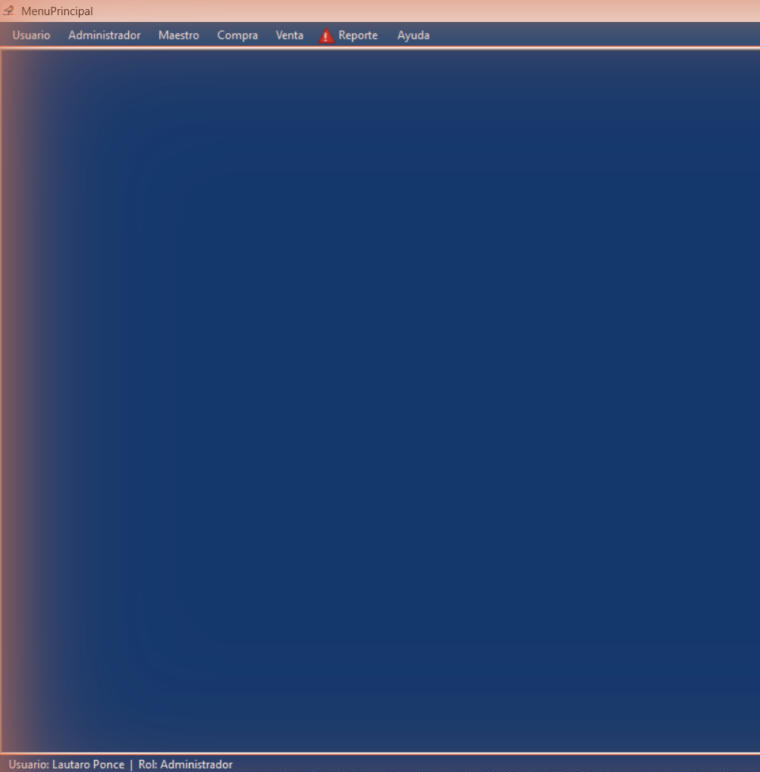
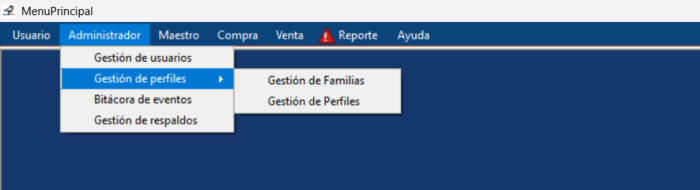
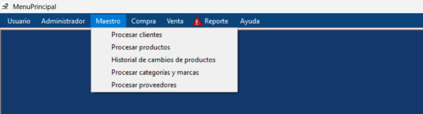
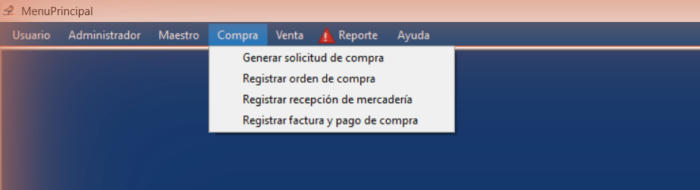
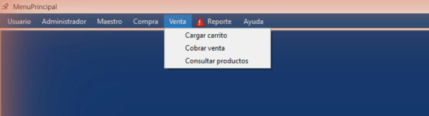
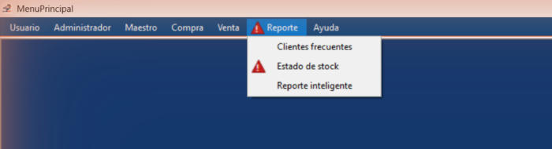

Inicio › Primeros pasos › Menú principal
Menú principal
Después de iniciar sesión llegás acá. Arriba está la barra de menú con las secciones del sistema y abajo ves quién está conectado. Solo aparecen las opciones que tu perfil puede usar.
Dónde está: Se abre al iniciar sesiónLo usa: Todos los usuariosAtajo: F1
Pasá el mouse por encima de cualquier botón o campo de la pantalla para ver qué hace.

Qué hace cada elemento
- 1UsuarioCambiar idioma, cambiar tu contraseña, iniciar sesión y cerrar sesión.
- 2AdministradorUsuarios, perfiles, bitácora de eventos y respaldos de la base de datos.
- 3MaestroLos datos base: clientes, productos, categorías y marcas, y proveedores.
- 4CompraTodo el circuito de compra: solicitud, orden, recepción de mercadería y factura.
- 5VentaCargar el carrito, cobrar la venta y consultar productos.
- 6ReporteClientes frecuentes, estado de stock y reporte inteligente. El triángulo rojo avisa que hay productos para reponer.
- 7AyudaAbre esta ayuda en el navegador. En cualquier pantalla también podés usar F1.
- 8Área de trabajoCada pantalla que abrís aparece acá, ocupando todo el espacio. Podés tener varias abiertas y cerrarlas con su propio botón.
- 9Barra de estadoTe muestra con qué usuario y con qué rol estás trabajando.
Otras vistas de esta pantalla





Cómo hacerlo
- Tocá la sección en la barra de menú, por ejemplo Maestro.
- Elegí la opción de la lista.
- La pantalla se abre en el área de trabajo. Para volver al menú, usá su botón Cerrar o Salir.
- Al iniciar sesión, si hay productos sin stock o con stock bajo, aparece el aviso con las cantidades.
- Tocá Sí para abrir Estado de stock ya filtrado con lo que hay que reponer, o No para seguir.
- Mientras haya algo para reponer, el triángulo rojo queda junto a Reporte y a Estado de stock. Si pasás el mouse, te dice cuántos productos son.
Tené en cuenta: El aviso y el triángulo solo los ven quienes pueden abrir el reporte de Estado de stock.
Para saber más
Mensajes que puede mostrar el sistema 1
| Mensaje | Qué significa y qué hacer |
|---|---|
| ConfirmaciónProductos sin stock: (n) / Productos con stock bajo (5 unidades o menos): (n). ¿Desea abrir el reporte de estado de stock para ver qué reponer? | Sí abre Estado de stock mostrando solo lo que hay que reponer. No te deja en el menú. |
Reglas a tener en cuenta 4
- El menú depende de tu perfil: las opciones para las que no tenés permiso no se muestran. Si no ves algo que necesitás, pedile al administrador que revise tu perfil.
- Si el sistema detecta que los datos fueron alterados, el menú se reduce a la sección Usuario hasta que el administrador lo resuelva.
- Podés tener varias pantallas abiertas a la vez. Cada una se abre ocupando todo el espacio.
- Podés pedir ayuda con la tecla F1 desde cualquier pantalla: se abre el tema de esa pantalla.
Temas relacionados
SneakRush · Ayuda del sistema · Menú principal. Podés abrir esta ayuda desde cualquier pantalla con la tecla F1.